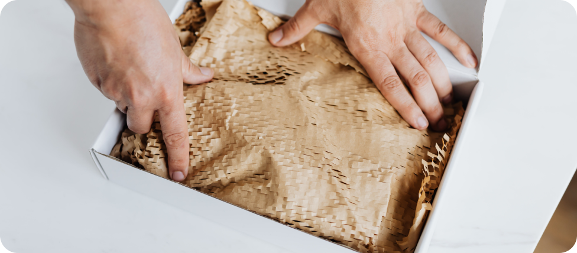
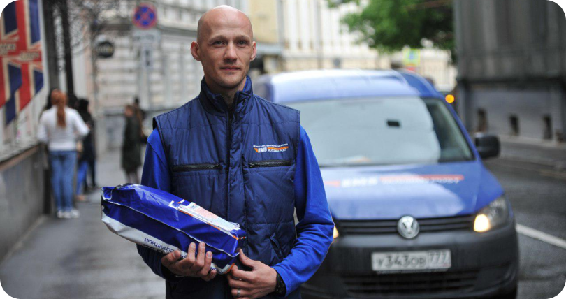

Отправка посылок - это удобный способ доставки товаров или подарков друзьям и семье. Чтобы отправить посылку, существует несколько вариантов курьерской доставки и почтовых служб.
Шаг 1
Упаковка посылки
Независимо от способа доставки, убедитесь, что ваша посылка тщательно упакована. Используйте прочный картонный ящик и достаточно упаковочного материала, чтобы защитить содержимое от повреждений. Правильная упаковка поможет обеспечить безопасную доставку вашей посылки.
В качестве упаковки можно использовать бумагу
Шаг 2
Выбор способа доставки
Если вам нужна более быстрая доставка, вы можете использовать курьерскую службу. Курьеры собирают посылки из дома отправителя и доставляют их напрямую получателю. Стоимость курьерской доставки обычно выше, чем почтовой, но посылка будет доставлена гораздо быстрее.
Курьерская служба Почты РоссииКурьеры сторонних служб
Шаг 2
Службы почты
Если вы хотите отправить посылку через отделение почты, придите в ближайшее из них, оплатите почтовые расходы в зависимости от веса и размера посылки и адреса получателя. Почта доставит вашу посылку в течение нескольких дней.
У многих сервисов (в том числе у Посты России) есть функция отслеживания доставки. Вбивайте номер посылки на сайте почтовой службы и смотрите, где она находится, в любой момент времени.